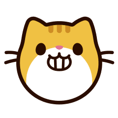

<ion-content center text-center>
  <ion-text color="primary">
    <h1>Ionic Kittens</h1>
  </ion-text>

  

  <ion-grid fixed>
    <ion-row>
      <ion-col size="12">
        <ion-text>
          <p id="descricao">"Meow!"</p>
        </ion-text>
      </ion-col>
    </ion-row>
  </ion-grid>

  <ion-input [(ngModel)]="nome" type="text" autofocus="true" autocomplete="on"  placeholder="Insira a raça do gato aqui"></ion-input>

  <!-- Botão para procurar o gato -->
  <ion-button id="btn" size="large" (click)="procurarGato(nome)" >
    Pesquise!
  </ion-button>
</ion-content>